FASE 5: DATA REPORTING¶
Para publicar un Dashboard, debemos compartir dicho Dashboard con el resto de usuarios.
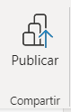
Al seleccionar la publicación de un Dashboard, la primera vez que ejecutemos esta función, nos solicitará las credenciales de acceso a Power BI Service. Estas credenciales, deben corresponder con el usuario y la contraseña con las que estamos registrados en Power BI Service.
El servicio de Power BI es el núcleo de Power BI. Este servicio, permite acceder a él desde cualquier navegador y será aquí donde se puedan crear paneles a partir de los informes que se han diseñado en la versión de escritorio de Power BI (Power BI Desktop) o en el propio Servicio.
En Power BI Service, se pueden crear reportes, pero su uso más común es la publicación de los informes desarrollados desde Power BI Desktop. Por lo que este servicio, es el quinto paso del ciclo de desarrollo y publicación de Dashboards. Data Reporting(DR).
Para acceder a Power BI Service se hará desde: Power BI Service
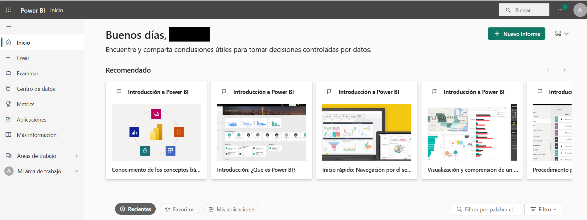
Formas de publicar informes¶
El acceso que se tiene a los distintos métodos para compartir informes, depende de si el usuario tiene la licencia PRO (o Premium) o no. Así pues, se van a clasificar las formas de compartir como:
- Usuarios que no tienen licencia.
- Usuarios que tienen licencia.
Usuarios sin licencia¶
Existen dos opciones para compartir los informes desde Power BI Desktop:
- Creando un fichero .pbix: no está recomendado para compartir ya que da acceso total a visualizar y editar el modelo de datos, métricas y elementos visuales. Además, si el usuario que recibe el informe no tienen acceso a las fuentes de datos utilizadas, no tiene posibilidad de actualizarlo.
- Exportando un informe en PDF: es una imagen estática del informe creado por lo que se pierde la funcionalidad de Power BI.
Usuarios con licencia¶
Existen muchas opciones para compartir los informes:
-
Compartir vínculo: se genera un enlace para compartir los informes con cualquier persona dentro de la organización o bien a una persona específica. Es una forma de compartir los informes de forma interna.
-
Compartir a través de un sitio web: Desde un informe en Power BI Service, en la pestaña de Archivo, se ha de seleccionar la opción de Insertar informe y hacer clic en Sitio web o portal. De esta forma, se genera un enlace para acceder desde cualquier dispositivo y además un código HTML para incrustar en un sitio web.
-
Incrustar reportes en Sharepoint Online: es un método sencillo y seguro para compartir informes con otros usuarios, simplemente hay que incrustar la URL como objeto de Power BI, en el servicio de SharePoint.
-
Compartir a través de áreas de trabajo:Todos los elementos que tenga el espacio podrán ser visualizados por todas las personas que tengan acceso al área de trabajo. Y además, para cada usuario se puede elegir si dar acceso de edición o de “visor” (sólo acceso de lectura).
-
Compartir a través de aplicaciones: si el usuario de desarrollo está haciendo cambios a un reporte, los cambios serán visualizados por el usuario final cuando el usuario de desarrollo decida actualizar la aplicación.
Conceptos básicos¶
Hay cuatro conceptos básicos que hay que conocer dentro de la interfaz, para saber navegar a través de ella.
1. Conjunto de datos: Los conjuntos de datos son fuentes de datos que van a alimentar los informes y paneles desarrollados.
2. Informes: Son conjuntos analíticos de visualizaciones asociados a un único conjunto de datos. En esta área se muestra un listado de los informes a los que se tenga acceso.
3. Paneles (Dashboards): Los paneles o cuadros de mando son conjuntos de visualizaciones extraídas de uno o más informes, lo que supone que un panel puede estar alimentándose de varios conjuntos de datos.
4. Áreas de trabajo: Se trata de "contenedores" en los que se van a organizar los paneles, informes, conjuntos de datos, etc. De forma que se pueda tener un área de trabajo con paneles e informes relativos al marketing, finanzas, etc.
Áreas de trabajo¶
Las áreas de trabajo son lugares de colaboración con compañeros sobre contenido específico dentro del propio servicio de Power BI. Los diseñadores de Power BI crean las áreas de trabajo para incluir colecciones de paneles e informes.
Todos los usuarios de Power BI Service tienen un espacio denominado Mi área de trabajo que es un espacio aislado y personal donde se puede crear contenido.
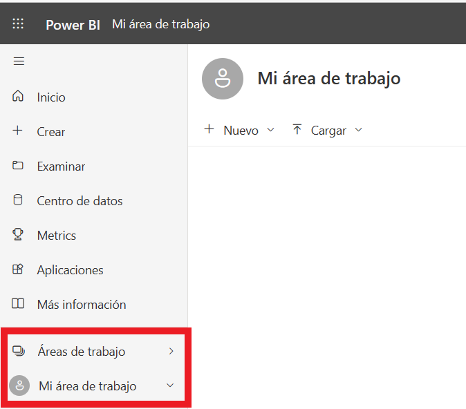
Las áreas de trabajo incluyen el contenido de una aplicación específica como pueden ser paneles, informes y conjuntos de datos.
Dentro de las áreas de trabajo, también se configuran los permisos de acceso y tipo de acceso que tienen los usuarios, con el fin de restringir las áreas de trabajo solo a aquellas personas que realmente deben tener acceso y qué es lo que van a poder hacer dentro del área de trabajo.
Al conceder acceso a una nueva área de trabajo, los diseñadores agregan personas o grupos a uno de los roles de área de trabajo:
- Visor:puede ver todos los informes del espacio de trabajo e interactuar con ellos.
- Colaborador: Además de los permisos del Visor, también pueden actualizar la aplicación asociada al área de trabajo. Sin embargo, no pueden publicar una nueva aplicación ni cambiar quién tiene permiso para ello.
- Miembro: hace lo mismo que el Colaborador y además puede publicar aplicaciones y añadir otros colaboradores o visores al espacio de trabajo.
- Administrador: puede conceder o denegar acceso al espacio de trabajo y actualizar o eliminar el mismo.
Podemos crear una nueva área de trabajo:
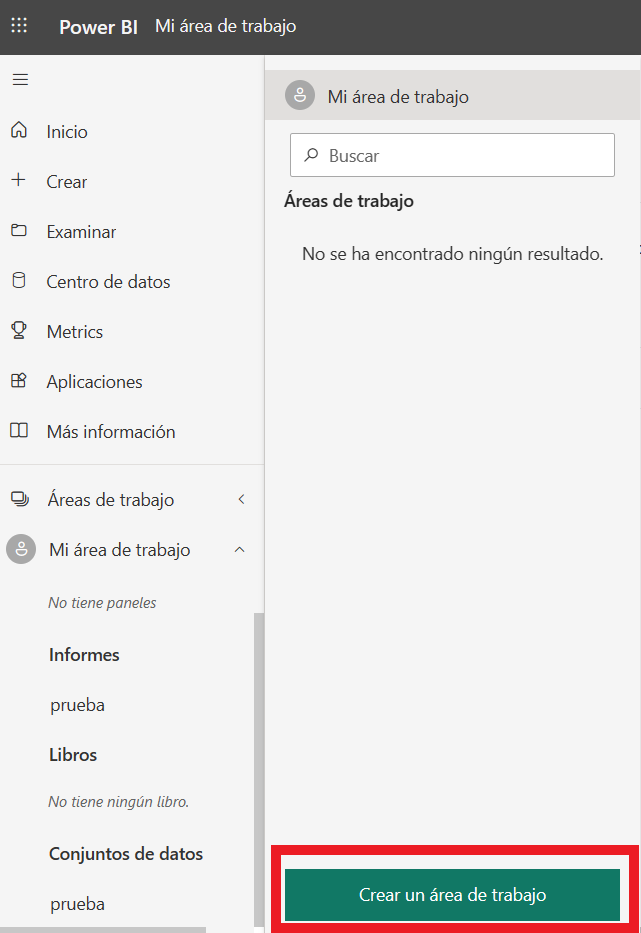
y podemos configurar el área de trabajo:
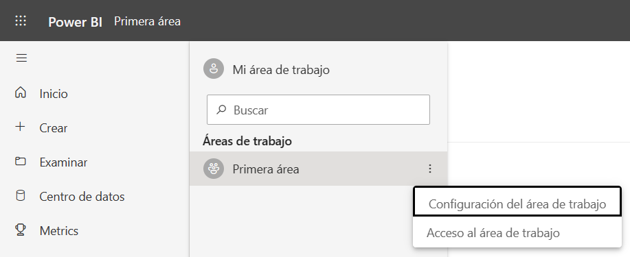
Dentro de cada área podemos encontrar el conjunto de datos que provienen del origen de datos y el informe.
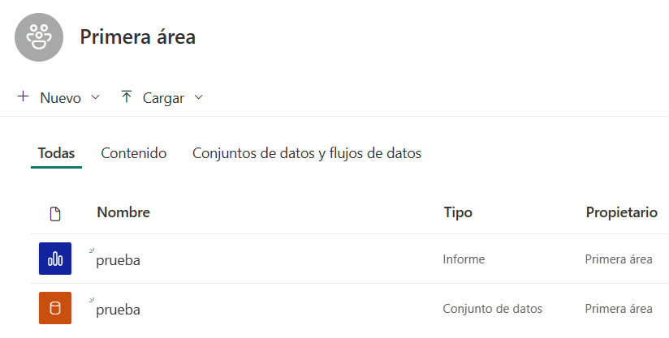
Podemos cambiar los roles a través de Acceso
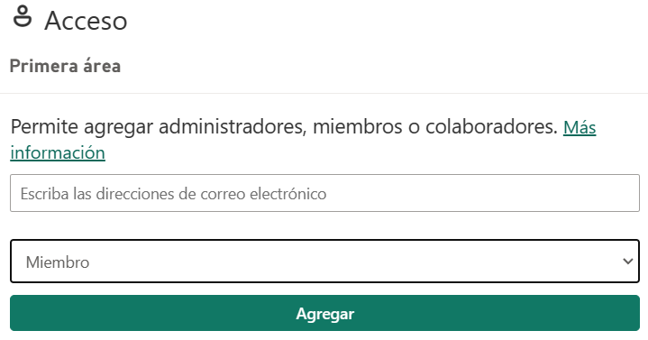
Informes¶
Los informes son otro de los elementos que forman parte del Servicio de Power BI, podemos decir que es la representación del cuadro de mando confeccionado en Power BI Desktop, es decir, es la publicación del Dashboard para que otras personas del equipo tengan acceso a la representación de los datos.
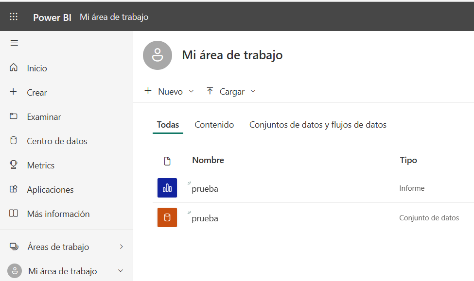
Interactuar con el contenido del informe (segmentación, filtrado, etc), no altera el conjunto de datos, solamente afecta a la sesión que se tenga abierta y no afecta al resto de usuarios que conecten con el informe.
Para abrir un informe, se necesitará uina licencia de Power BI PRO o formar parte de un área de trabajo que esté almacenada en una capacidad PREMIUM.
Una vez abierto el informe, podemos desde el menú Archivo, realizar lo siguiente:
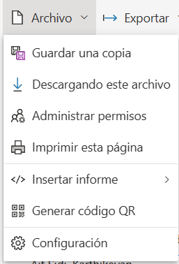
o desde el menú Exportar
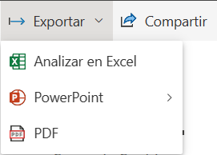
Paneles¶
Vamos a diferenciar entre informes y paneles.
Informe (Report) : Es una característica de Power BI que es el resultado de los datos visualizados de un único conjunto de datos. Un informe puede tener varias páginas de visualización. El informe se crea en Power BI Desktop o en Power Bi Service. El informe se conecta a un conjunto de datos.
Panel (Dashboard): Un panel de Power BI es una sola página, a menudo denominada lienzo, que cuenta una historia a través de visualizaciones. Debido a que está limitado a una página, un panel bien diseñado contiene solo los aspectos más destacados de esa historia. Los lectores pueden ver informes relacionados para obtener más detalles. Se puede utilizar, por ejemplo, como una previsualización de los informes.
Diferencias principales:¶
INFORMES
-
Páginas: se pueden crear varias páginas en un solo informe. Crear un menú que navegue entre ellas.
-
Crear: se puede crear un informe en Desktop y Power BI Service.
-
Origen de datos: un único conjunto de datos por informe en el servicio Power BI.
-
Establecer alertas: no puede crear alertas de datos por correo electrónico para el informe de Power BI.
-
Filtrado: los informes admiten muchas opciones de filtro, como marcadores, filtros y segmentaciones.
-
Destacado: no se puede establecer Informe como informe destacado. Ver tablas y campos de conjuntos de datos subyacentes: Sí, puede ver tablas, campos y valores de conjuntos de datos.
-
Favoritos: Puede agregar un panel a favoritos.
PANELES
-
Páginas: es una pantalla de visualización de una sola página. Principalmente, se utiliza para mostrar los datos de resumen.
-
Crear: se puede crear un panel solo en el servicio Power BI.
-
Fuente de datos: se puede usar uno o más informes y uno o más conjuntos de datos por panel en el momento de la creación.
-
Establecer alertas: se puede crear alertas de datos por correo electrónico para los mosaicos del panel de Power BI cuando se cumplen determinadas condiciones.
-
Filtrado: el panel solo admite marcadores y no admite ningún otro filtro o segmentación.
-
Destacado: puede configurar el panel destacado. Ver tablas y campos de conjuntos de datos subyacentes: No se pueden exportar datos, ni ver tablas y campos en el panel.
-
Favoritos: Puede agregar un informe a favoritos.
Libros de Trabajo¶
Los libros de trabajo de Power BI son algunos de los modelos de datos con varias tablas de datos cargadas. Estos datos se pueden cargar mediante Power Query o Power Pivot. Todas las propiedades del modelo de datos como medidas, jerarquías, KPI, relaciones, etc, son compatibles con Power BI.
Power BI admite cuatro tipos diferentes de libros de trabajo:
- Rangos de libros de trabajo o tablas de datos: se debe asegurar que el rango de datos de la hoja de trabajo debe estar en formato de tabla. Cuando se crea una informe en Power BI, esto ayudará a ver las tablas y columnas nombradas en el panel Campos.
- Modelos de datos en libros de trabajo: los libros de trabajo de Power BI son algunos modelos de datos con varias tablas de datos cargadas.
- Conexiones de fuentes de datos externas con libros de trabajo.
- Libros de trabajo de Power BI con gráficos, tablas dinámicas y hojas de vista:los libros de trabajo con los gráficos, las tablas dinámicas y las hojas de vista dependen de dónde se guarde el archivo de su libro de trabajo y cómo elija buscarlo en Power BI.
Gestión de los Conjuntos de Datos¶
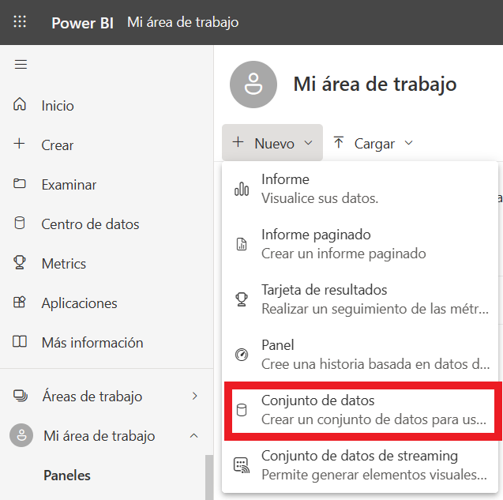
Los conjuntos de datos, son los contenedores donde se almacenan los datos que se consumen posteriormente en los informes. Es por eso que lo normal, es que cuando se publica un informe, se publique por una parte el reporte y por otra parte el conjunto de datos.
Gestión de Roles y Permisos¶
La seguridad de nivel de fila (RLS) con Power BI puede usarse para restringir el acceso a los datos a determinados usuarios. Los filtros restringen el acceso a los datos en el nivel de fila y se pueden definir en roles. En el servicio Power BI, los miembros de un área de trabajo tienen acceso a conjuntos de datos del área de trabajo. RLS no restringe este acceso a datos.
Los pasos de creación de los roles, son los siguientes:
-
Acceder a Power BI Desktop. Para definir los roles, se debe acceder al desarrollo realizado en Power BI Desktop. Y entrar en el grupo de herramientas “Modelado”.
-
Seleccionar “Administrar Roles”. Esa es la función desde la que se van a definir los roles, por los que se quiere segmentar la información y que posteriormente se asignará a los usuarios con acceso a los datos desde Power BI Service.
-
Definir un nombre para el rol y establecer un filtrado de datos para ese Rol. Aquí es donde se establecen las expresiones para filtrar los datos. En el ejemplo adjunto, al rol denominado Ventas, solo se muestran los datos del Departamento Sales.
-
Validar Rol. Se puede validar el Rol creado, simplemente seleccionando la opción “Ver Rol”, dentro del mismo grupo de herramientas. Así se realizará una navegación simulada con el Rol seleccionado.
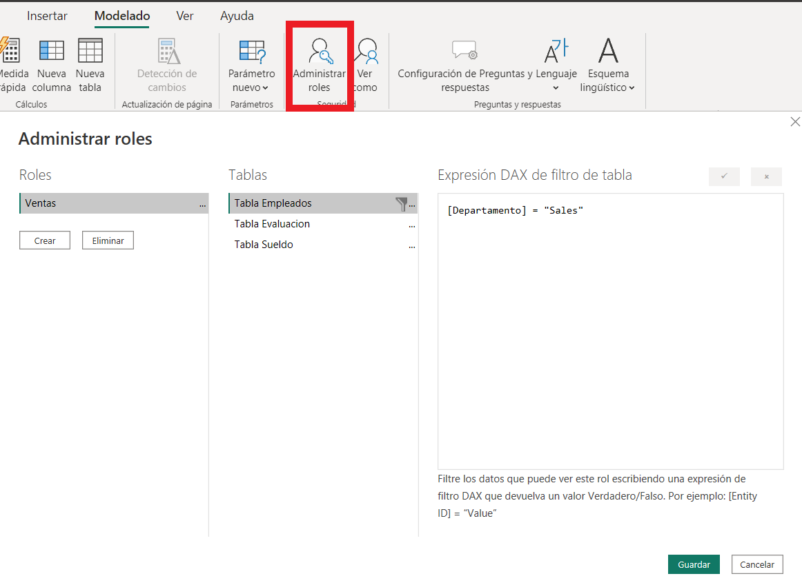
Una vez creados los roles y publicado el informe, se puede asignar el rol a un usuario para que la información que pueda ver dicho usuario, esté restringida por el rol seleccionado. Para ello se seguirán los siguientes pasos.
Seleccionar Seguridad del conjunto de datos, en el área de trabajo correspondiente. Una vez publicado, hay que acceder al Área de trabajo donde se ha publicado el desarrollo y navegar hasta el conjunto de datos. Una vez aquí, seleccionar la seguridad, tal y como aparece en la imagen.
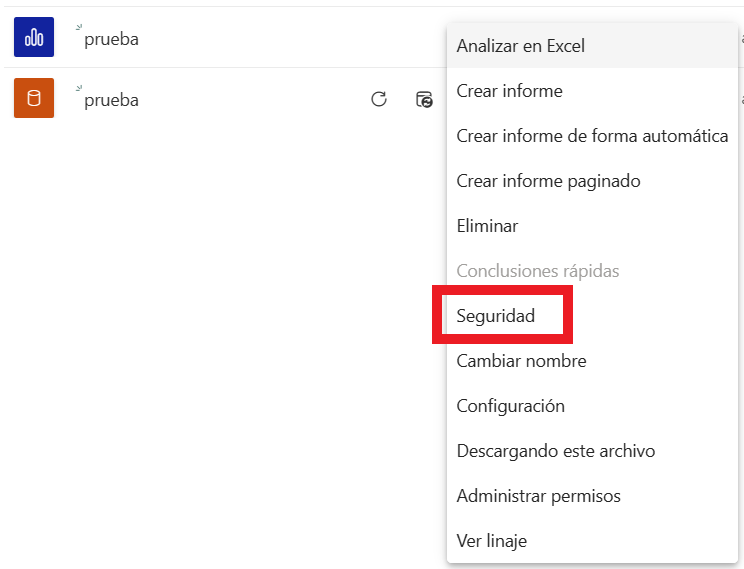
Asignar el Rol y el usuario al que aplicarlo. Se selecciona el Rol y los usuarios que tengan permisos de acceso al Área de trabajo, de forma que se les asigne dicho Rol.
Creación de Paneles¶
Para poder crear un panel desde Power BI Service, se deben seguir los siguientes pasos:
-
Acceder al área de trabajo. Seleccionar el área de trabajo donde se quiere crear el nuevo panel.
-
Seleccionar nuevo panel. Para ello, se pinchará en el botón que aparece bajo el título del área seleccionada Nuevo > Panel.
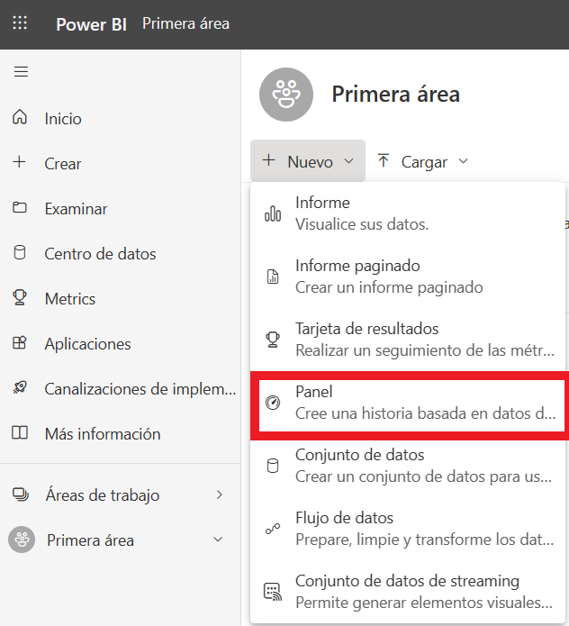
-
Definir el nombre del panel. Una vez seleccionado el Nuevo Panel, se solicitará que se especifique el nombre de dicho elemento.
-
Una vez creado el panel, se podrá observar un lienzo vacío. Solo queda realizar los siguientes pasos que se explican a continuación para rellenar esa información/resumen referente a uno o varios orígenes de datos.
-
Ir a un informe. Accederemos a cualquiera de los informes desarrollados en el área de trabajo seleccionada.
-
Anclar los objetos en el panel. Desde los informes, se observará que cada uno de los objetos visuales, al pasar por encima, muestran una chincheta. La función de este elemento, es anclar dicho objeto en el nuevo panel.
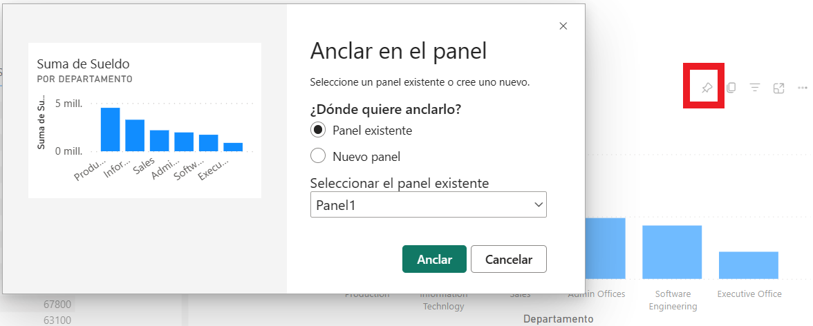
Tambien podemos incluir elementos como texto, imágenes, vídeos, etc.
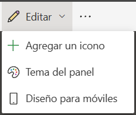
Las limitaciones más importantes que se deben tener en cuenta a la hora de usar un área de trabajo, se enumeran a continuación:
• Las áreas de trabajo pueden contener un máximo de 1000 conjuntos de datos o 1000 informes por cada conjunto de datos.
En el caso de las áreas de trabajo en una capacidad compartida:
• Hay un límite de almacenamiento de 10 GB por área de trabajo.
• En el caso de las áreas de trabajo de la aplicación, el uso total no puede superar el límite de almacenamiento del inquilino de 10 GB multiplicado por el número de licencias Pro o Premium por usuario (PPU) del inquilino.